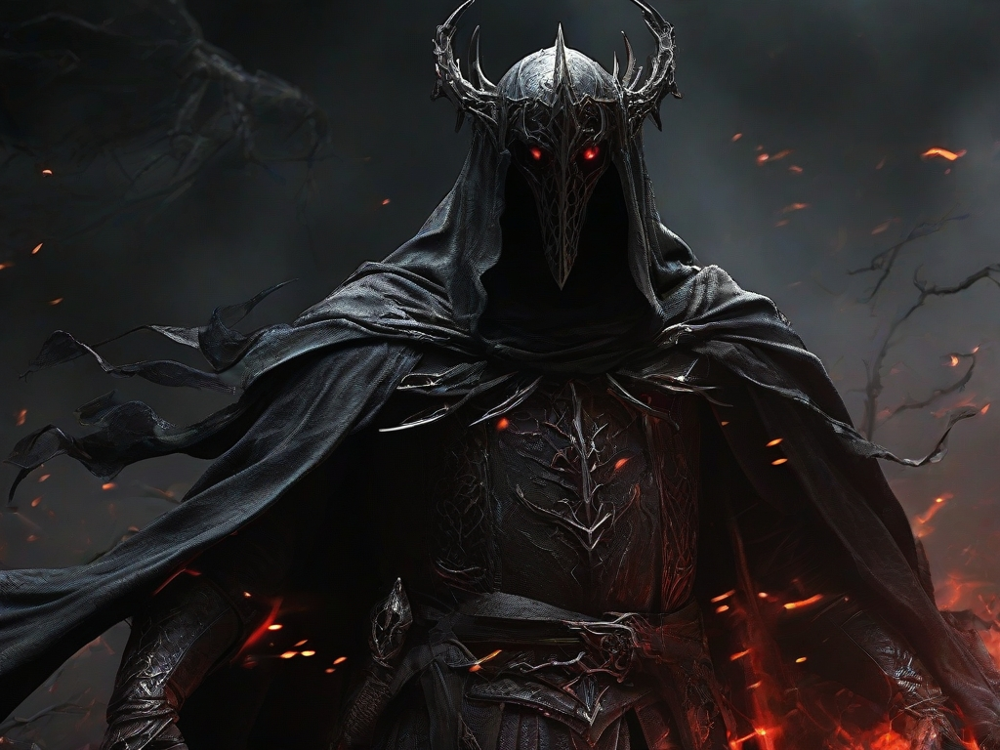
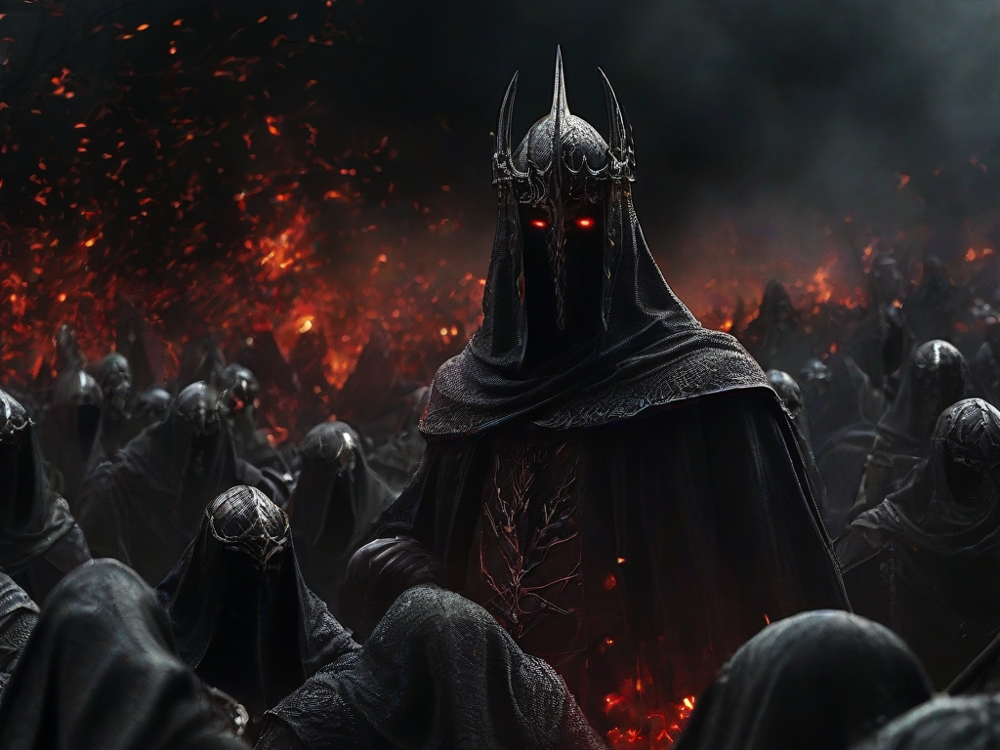

The resolution is 1024 x 768px. It was created on 12/12/23 at 8:50 AM. The sampler used was Leonardo. The seed number is 895614208. No preset was used. There is no prompt magic. The init strength is "No init image". There is no high contrast.
To mortals, the Nazgûl appeared as shadowy Men hidden by black hoods and cloaks that reached down to their boots.[11]:74 Without their cloaks, they were shapeless,[22] and invisible to all but the wearer of the One Ring.[3] When the Witch-king removed his hood, his crown could be seen, although his head was invisible and the red fires shone through it.[23]:829 During the Battle of the Pelennor Fields, the deadly gleam of his eyes could be seen.